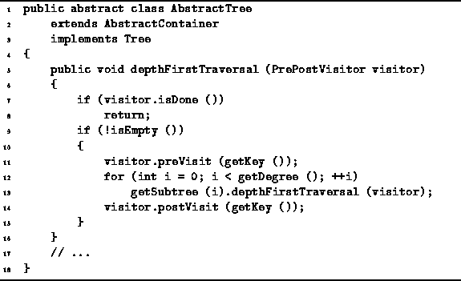
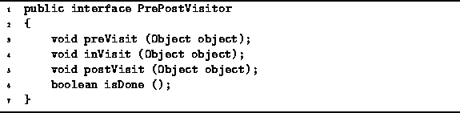
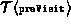
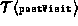

Data Structures and Algorithms
with Object-Oriented Design Patterns in Java
Data Structures and Algorithms
with Object-Oriented Design Patterns in Java
Program  defines the depthFirstTraversal method
of the AbstractTree class.
The traversal method takes one argument--any object that implements the PrePostVisitor interface
defined in Program .
defines the depthFirstTraversal method
of the AbstractTree class.
The traversal method takes one argument--any object that implements the PrePostVisitor interface
defined in Program .

Program: AbstractTree class depthFirstTraversal method.
A PrePostVisitor is a visitor with four methods,
preVisit, inVisit, postVisit, and isDone.
During a depth-first traversal the preVisit and postVisit
methods are each called once for every node in the tree.
(The inVisit method is provided for binary trees
and is discussed in Section ).

Program: PrePostVisitor interface.
The depth-first traversal method first calls the preVisit method with the object in the root node. Then, it calls recursively the depthFirstTraversal method for each subtree of the given node. After all the subtrees have been visited, the postVisit method is called. Assuming that the isEmpty, getKey, and getSubtree methods all run in constant time, the total running time of the depthFirstTraversal method is
where n is the number of nodes in the tree,  is the running time of preVisit, and  is the running time of .
 Copyright © 1998 by Bruno R. Preiss, P.Eng. All rights reserved.
Copyright © 1998 by Bruno R. Preiss, P.Eng. All rights reserved.